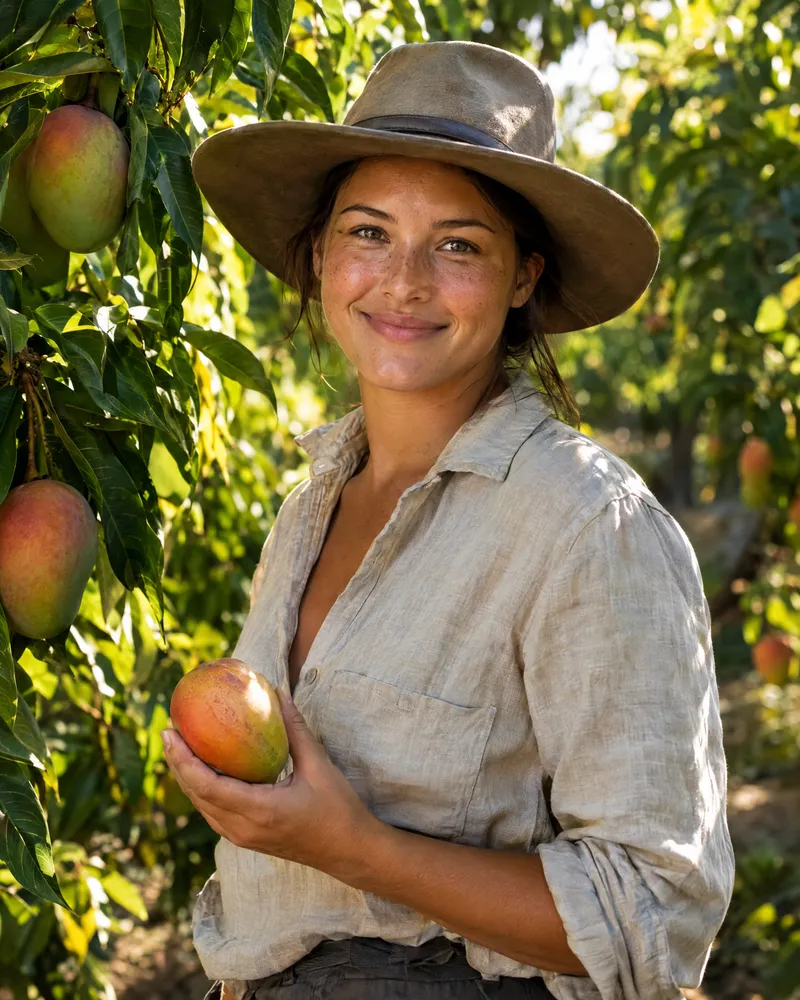

Guides PVT Australie
Mis à jour le 26 septembre 2026 · chiffres tirés du guide AUSSIEWAY (2 303 contacts)
- Les 88 jours en PVT Australie Tout comprendre aux 88 jours de « specified work » : quels jobs comptent, où les faire, quels papiers garder et comment trouver un employeur.
- Travail en ferme en Australie : le calendrier des embauches Quel État australien recrute des backpackers chaque mois ? Le calendrier des embauches en ferme, État par État, établi à partir de 2 303 contacts.
- Les vendanges en Australie en PVT Les vendanges australiennes ont lieu de février à avril. Régions, paie au rendement et contacts de vignobles qui embauchent des backpackers.
-

Travailler en Tasmanie en PVT La Tasmanie recrute des backpackers de novembre à mars : cerises, petits fruits, vignes, hôtellerie. Saisons et nombre d'employeurs par mois. - Trouver un job en PVT Australie Les papiers à préparer, le modèle d'e-mail en anglais, la phrase à dire au téléphone, le CV australien et les arnaques à éviter.